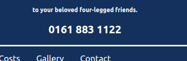
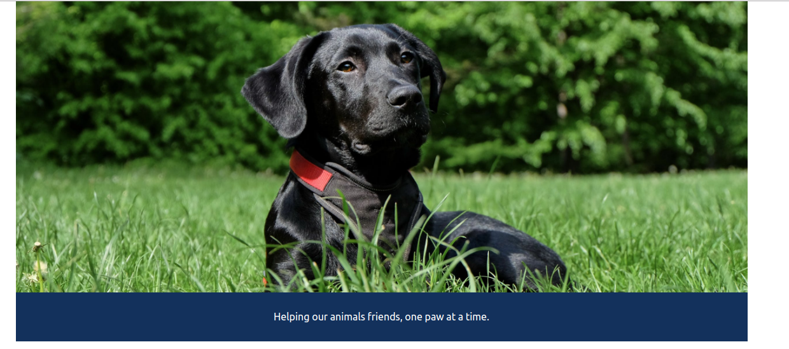
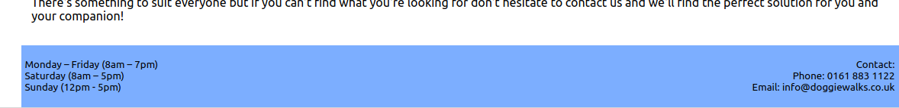
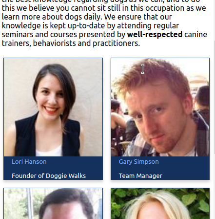
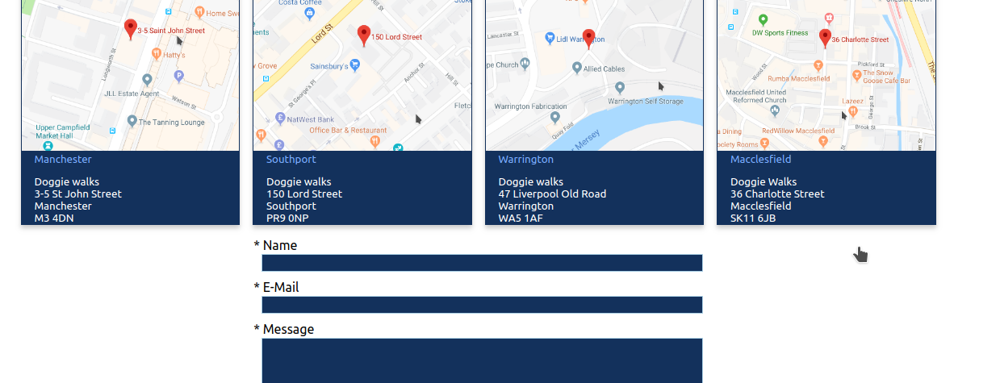

Doggie Walks Website
2019 Degree Work
Click to open in new tab
A simple HTML5 and CSS3 website build with a single JavaScript function to create a simple but effective, responsive navigation. Aiming to meet a client's specifications, Doggie Walks blends supplied images, business colour scheme and personal creative license to result in a build that creates a point-of-call for new, prospective customers.
Working to a Lean methodology, the Doggie Walks build was created with planning, design, implementation and testing phases, using sprint iterations to ensure the build was completed in a timely fashion, taking into account the required specifications given by the client.
Large points of call, with the contact phone number for the company displayed in large contrasting font on the header throughout the site build. Furthermore, this number is a link so that it can easily be called from the mobile site.
The requested blue colour throughout the site matches the specification of the client whilst also contrasting well with the company logo supplied. Partnered with a white font, this works well together.
Another site requirement was large images throughout the site, which can be seen on each page header and in the gallery. The bold imagery of the photos supplied paired with the minimal white backgrounds throughout make the text and information pop from the page.
Another example of the colour scheme working throughout the site, with the orange paired with white, dark blue and light blue. Furthermore there is a prominence of the special offer as requested by the client.
The footer spreads across the bottom of each page and displays the requested information from the client. The light blue colour continues the colour scheme whilst the dark blue font shows the opening times of the business and the contact details.
The responsive mobile menu becomes a drop down behind a hamburger icon as opposed to the inline-block seen in the desktop version of the site. The dark blue background and white font pairs well, whilst the links become light blue on hover.
The meet the team page displays each member of staff in a profile card, with image, name and title displayed. Whilst an effective way to display this information it is also incredibly easy to edit these in the case of staff changes. .
The gallery is a requested feature of the client, showing the large images that they have supplied. Rather than a standard gallery grid to display the photos, the rows are not uniform, so that the images stay in their columns but can stretch to a desirable height. It is also responsive, creating more or fewer columns dependant on the width of the browser.
The contact page displays maps for each of the business locations with links to get directions to these places. Displayed in profile cards with the same blue colour scheme, these match the rest of the site well. Furthermore a contact form has been styled underneath as requested by the client, which has also been styled in the same blue colour scheme.

Doggie Walks Website
2019 Degree Work
Click to open in new tab